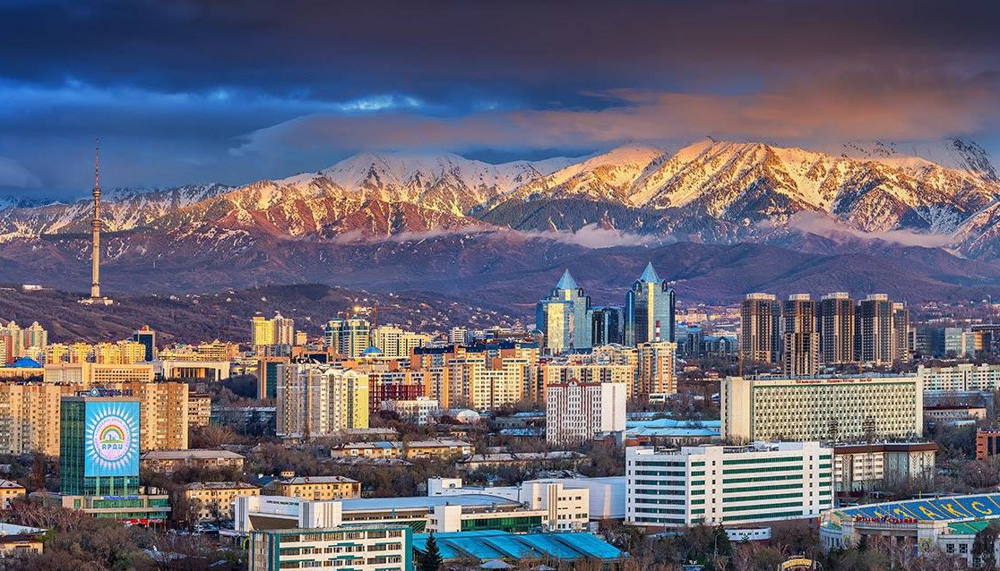

Almaty is a city of a republican significance and the latgest settlement in the Republic of Kazakhstan. Almaty is located in the South-East of Kazakhstan.It lies in the northern foothills of the Trans-Ili Alatau at an elevation of 700–900 metres, where the Bolshaya and Malaya Almaatinka rivers emerge onto the plains.
Almaty city, Kazakhstan
